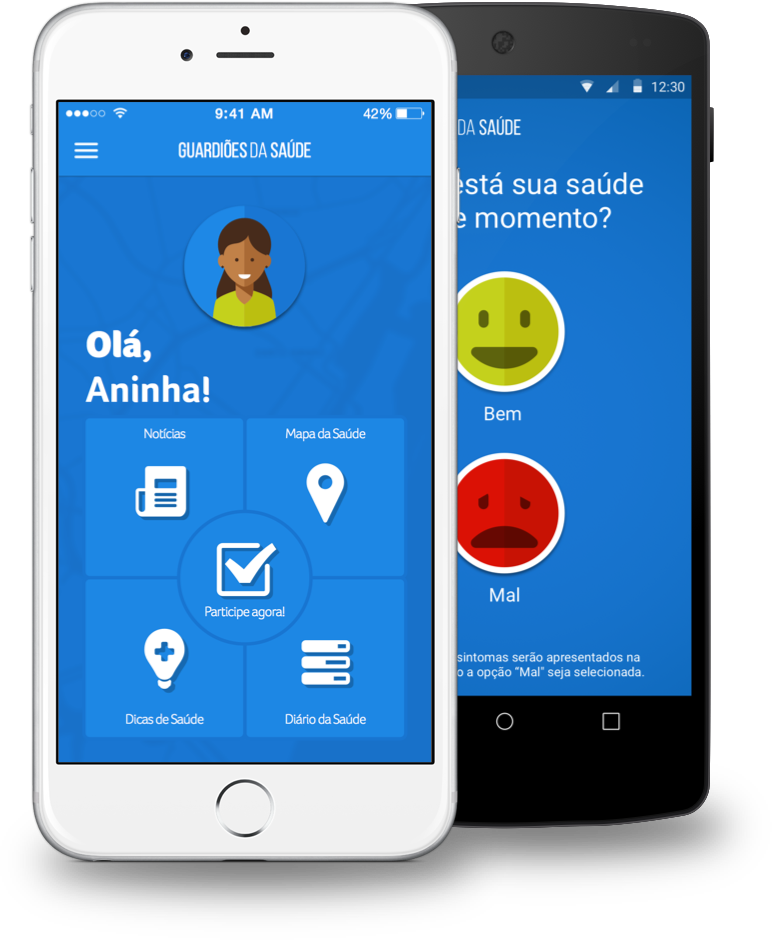

<section class="banner-download-app">
  <div class="container">
    <div class="row">
      <figure class="col-sm-4 phones">
        
      </figure>

      <div class="col-sm-8 cta-download-app">
        <h3>Seja um Guardião da Saúde da sua comunidade, baixe o aplicativo!</h3>

        <h5>Participe na prevenção de doenças, contribuindo ativamente com a vigilância em saúde no Brasil.</h5>

        <p>Já disponível para dispositivos iOS e Android.</p>

        <a href="https://itunes.apple.com/us/app/guardioes-da-saude/id1060576766" class="col-sm-3 app-store" target="_blank">
        <figure>
          
          <figcaption>iOS 9</figcaption>
        </figure>

        <a href="https://play.google.com/store/apps/details?id=com.epitrack.guardioes" class="col-sm-3 google-play" target="_blank">
        <figure>
          
          <figcaption>Android 4.4 ou superior</figcaption>
        </figure>
        </a>
      </div>
    </div>
  </div>
</section>
